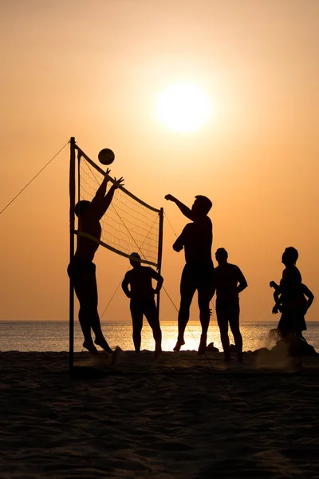

Sport towarzyszy mi od zawsze, a każda forma ruchu daje mi energię i radość. Od dziecka szukałam różnych możliwości aktywności fizycznej, co zaowocowało różnorodnymi doświadczeniami. Przez kilka lat trenowałam piłkę nożną, która nauczyła mnie zdrowej rywalizacji, współpracy i wytrwałości. Każdy mecz był dla mnie lekcją pracy zespołowej i wspólnego dążenia do celu. Równocześnie pasjonowało mnie bieganie na długie dystanse – dzięki niemu nauczyłam się pokonywać własne ograniczenia, a wytrwałość stała się dla mnie kluczowa. Częste wizyty na siłowni pomogły mi z kolei zbudować siłę i zadbać o kondycję, co wzmacnia mnie zarówno fizycznie, jak i mentalnie.
Dziś moją największą pasją jest siatkówka. Gra na pozycji środkowej pozwala mi maksymalnie wykorzystać moje 182 cm wzrostu i stale rozwijać umiejętności. Pracuję nad szybkością, techniką i zrozumieniem gry, aby być solidnym wsparciem dla drużyny i stale podnosić swoje kompetencje na boisku. Każdy trening traktuję jako szansę na doskonalenie, bo wierzę, że rozwój jest kluczem do sukcesu. Siatkówka daje mi przestrzeń, by w pełni realizować tę pasję i dążyć do osiągnięcia kolejnych sportowych celów.
Dziś moją największą pasją jest siatkówka. Gra na pozycji środkowej pozwala mi maksymalnie wykorzystać moje 182 cm wzrostu i stale rozwijać umiejętności. Pracuję nad szybkością, techniką i zrozumieniem gry, aby być solidnym wsparciem dla drużyny i stale podnosić swoje kompetencje na boisku. Każdy trening traktuję jako szansę na doskonalenie, bo wierzę, że rozwój jest kluczem do sukcesu. Siatkówka daje mi przestrzeń, by w pełni realizować tę pasję i dążyć do osiągnięcia kolejnych sportowych celów.